Website Documentation
| Website: | https://www.example.com |
| Project: | My Project Name |
| Date: | 2020-05-15 |
| Owner: | Customer Name or Company |
| Author: | Firstname Lastname |
- 1 Introduction
- 2 Terminology - Glossary
- 3 General
- 3.1 General - Login to the Backend
- 3.2 General - Reset your password
- 3.3 General - Edit user account
- 3.4 General - System Users
- 3.5 Dashboard - Overview
- 3.6 General - Using the rich text editor (CKEditor)
- 4 Content Types (Nodes) of type Page
- 4.1 Node type Page: Administer Pages
- 4.2 Node type Page: Add new node
- 4.3 Node type Page: Existing node options
- 4.4 Node type Page: Edit an existing node
- 4.5 Node type Page: Delete an existing node
- 4.6 Node type Page: Create and revert Revisions
- 5 Content Types (Nodes) of type News & Events
- 5.1 Node type News & Events: Administer News & Events
- 5.2 Node type News & Events: Add new node
- 5.3 Node type News & Events: Edit an existing node
- 5.4 Node type News & Events: Delete an existing node
- 5.5 Node type News & Events: Preview node
- 6 Content Types (Nodes) of type Member
- 6.1 Node type Members: Administer Members
- 6.2 Node type Member: Add new node
- 6.3 Node type Member: Edit an existing node
- 6.4 Node type Member: Delete an existing node
- 7 Media Types (Media)
- 7.1 Media: Media Dashboard
- 7.2 Media: Add Media
- 8 Taxonomy Terms
- 8.1 Taxonomy: Administer Taxonomies
- 8.2 Taxonomy: Add Taxonomy Term
- 9 Reusable Data
- 9.1 Reusable Data: Reusable Counters
- 9.2 Reusable Data: Add/Edit Counter
- 9.3 Reusable Data: Reusable iFrames
- 9.4 Reusable Data: Add/Edit iFrame
- 9.5 Reusable Data: Reusable Sponsors
- 9.6 Reusable Data: Add/Edit Sponsor
- 9.7 Reusable Data: Blocks (Static)
- 9.8 Reusable Data: Add/Edit Block of type HTML
- 9.9 Reusable Data: Add/Edit Block of type Contact
- 9.10 Reusable Data: Add/Edit Block of type Address
- 10 Elements
- 10.1 Elements (or Paragraphs) overview
- 10.1 Elements: Add/Edit Element of type "Events List"
- 10.2 Elements basic options and operations
- 10.3 Elements: Add/Edit Element of type "Free Text/Title"
- 10.4 Elements: Add/Edit Element of type "Quote"
- 10.5 Elements: Add/Edit Element of type "iFrame"
- 10.6 Elements: Add/Edit Element of type "Video"
- 10.7 Elements: Add/Edit Element of type "Hero Image"
- 10.8 Elements: Add/Edit Element of type "Counters"
- 10.9 Elements: Add/Edit Element of type "Sponsors List"
- 10.11 Elements: Add/Edit Element of type "News List"
- 10.12 Elements: Add/Edit Element of type "Member List"
- 10.13 Elements: Add/Edit Element of type "Report List"
- 10.14 Elements: Add/Edit Element of type "Columns"
- 10.15 Elements: Add/Edit Element of type "Twitter"
- 10.16 Elements: Add/Edit Element of type "Text + Image"
- 11 Forms
- 11.1 Form Publication Request - Clear Submissions
- 11.1 Forms - Overview
- 11.2 Form Contact - Submissions
- 11.3 Form Contact - Clear Submissions
- 11.4 Form Contact - Download Submissions
- 11.5 Form eNewsletter - Submissions
- 11.6 Form eNewsletter - Download Submissions
- 11.7 Form eNewsletter - Clear Submissions
- 11.8 Form Publication Request - Submissions
- 11.9 Form Publication Request - Download Submissions
- 12 Menus & Navigation
- 12.1 Menus & Navigation - Main Menu
- 12.2 Menus & Navigation - Footer Menu
1 Introduction
| Info | Only logged in users (Manager, Site Admins) have access to the administration pages (Dashboard etc) described below. You should use any modern browser to administer the website like Chrome, Edge, Firefox, Safari etc. We use Chrome browser to demonstrate functionality on these manuals. You should use a screen with a minimum width of 1200px to have a great administrative experience. Anonymous users are every visitor of the website that access it without an account on this website. |
2 Terminology - Glossary
| Info | (Terms sorted by name) Accessibility (in short "A11y")If you rely on a screen reader or other assistive technology, you will be glad to know that we have built this website to encourage and support the proper use of semantic markup. For example, you should be able to use headings reliably for page-level navigation. This website is using Drupal Core which has designed to support the development of sites that comply with WCAG 2.0 and ATAG 2.0. There is also a dedicated Drupal Accessibility Group who deals with A11y issues and warnings. See more info about this topic at:
BlockDrupal Blocks are boxes of content rendered into an area, or region, of a web page but on the same position. Blocks may be static (their content will not change dynamically) and dynamic. For example, a static block may be a search form, a follow us social widget or copyright notice. A dynamic block may be the "Latest 4 News", the "See more like this" block etc. CacheThe software that runs your site, on each page request, must perform calculations and retrieve data from the database, in order to compose the page that is sent to the web browser or other application that is accessing the site. These calculations take time, which can mean that your page load time is longer than would be desirable. During these page calculations, intermediate results and the final page output are stored in a special database area (known as the cache). Then the next time a compatible request is made, intermediate or final results, as appropriate, can be retrieved and used rather than redoing the entire calculation. In addition, when content or data that affects a particular calculation is updated, the affected cached data is removed from the cache, forcing that part of the calculation to be redone the next time it is needed. When you make a change in the website and you need this change to be public available immediately you probably need to "clear the Caches" using the appropriate button on the Dashboard Menu (see more in related section). CKEditorCKEditor is the Drupal default wysiwyg editor. It allows users to add rich html content without knowing programming. All fields of type "formatted" (textarea) are using CKEditor while editing. Content Types (aka Nodes)Think of nodes as articles or posts. Each section of the website (eg News, Members etc) has its own content type to create it. A content type contains fields and has its own display modes which are called "View Modes" (see related term). For example a content type News may have a Title, an Image, Body (html text) and Category. Each node has its own unique id (node id or nid) and can be accessed through a unique system path like You can inspect the nid on the url path while editing an existing Node. DrupalThe CMS which is used to build this wesbite. Drupal is a php framework that has a well-defined structured data schema and comes with several third party integrations out of the box. FieldsFields are form input elements where a user can add data. For example, a Text field is a field where a user can add text using the keyboard, an Image field is a form widget where a user can upload an image from his/her computer etc. Content types as also as Media ano other templates (see related terms) have their own Fields to hold data. MediaMedia are like Nodes but with dedicated options to represent rich media (image, video, file attachment, iframe, social embed etc). Media do not have an individual webpage but they can be attached to Content pages (Nodes) through reference fields. They have fields like Nodes have since they keep data too. Menu itemEach menu on the website consists of one or more links. Each link is a menu item. Eg a menu item may be the link to the Contact page ( ParagraphsDrupal Paragraphs are special Drupal fields which combine other fields and display as a whole. In simple words, Paragraphs are group of fields that can represent an element. For example, a Paragraph of type "Picture with Caption" may use an Image field and a Textfield and display an Image with a Caption after it. Paragraphs in Drupal offer a great authoring experience, since they control data as also as markup in details. Furthermore, authors can "duplicate" Paragraphs and "reorder" them within the Node page which allows for fast page structure building and easy visual changes. In this project we call Paragraphs "Elements" to avoid any conflict with text paragraphs inside the textarea. Path aliasEvery Drupal webpage has a system (internal) path. For example a Node of type Page with the ID 23 may have the internal path
System paths are always there unless a Node is deleted from the system. Since these paths are "ugly" and not SEO friendly Drupal uses a path alias system to make these SEO friendly.
Saying so, the Node with system path When a user visits the system path The path aliases display by default on the Menu Items or on every other link generated by the system. TaxonomyTaxonomies are keywords used to categorize content of the website. Other common words are 'terms', 'tags' etc. In Drupal CMS these are called 'taxonomy terms'. For example all "News & Event" nodes may have a "Services" taxonomy where users can read only news that have the category "Services" while other prefer to read News of category "Nightlife". TokenTokens are small dynamic placeholders that automatically convert to html. To take a simple example, if you put To take a more complicated example, when you edit the metatag settings of a node you can use the token Notice that not all the fields provide token support. If a field supports tokens there is a link to open a modal with the available tokens ("Browse available tokens"). User RoleEach user that has an account to the website must have a specific role. According to his/her roles he/she may have different permissions to the website. There are 2 main user roles set: "Site Admin" and "Manager". "Site Admin" is a super user having any available permissions. "Manager" role has specified permissions that are represented in current Manual. All users that have an account refer as 'authenticated users' and users that browse the website without being logged in refer as 'anonymous users'. View ModeAll Node types as also as other Content related types (eg Media) have several output displays available called "View Modes". Each display provides field values with proper styling and other validation rules. For example, a Node of type News may have a view mode "Teaser" that displays Image, Title and Link to go to the Node page and a view mode "Full Mode" that displays all the available fields. The first one is used while on News dynamic lists and the second one when the full News Page is rendered alone in its own path. ViewsDrupal Views are dynamic lists of content which have user defined sorting, filtering and other options. Views can display as web Pages, Drupal Blocks or other more advanced display types. A Views may be for example a "News" page that displays Nodes of type "News" sorted by date created (latest come first) with a pager of 12 items per page. Another example of Views may be a list of "Our Officers - Members" that displays Nodes of type Member sorted by Member Name and filtered by Members category "Our Officers". Website (or site)The whole website under your main domain. |
3 General
3.1 General - Login to the Backend
| Url | /user/login |
| Info | How to login to the Administration backend pages. Go to the User Login page and then follow the steps below. |
| Image: Login | |
| 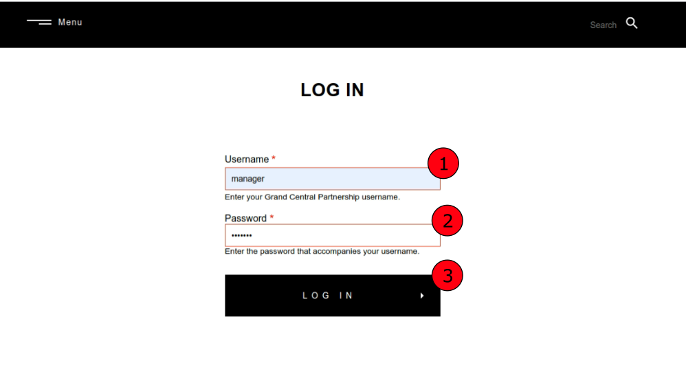 |
|
3.2 General - Reset your password
| Url | /user/password |
| Info | How to reset your User Account password in order to login in the Administration backend pages. Go to the Reset Password page and then follow the steps below. |
| Image: Reset password | |
| 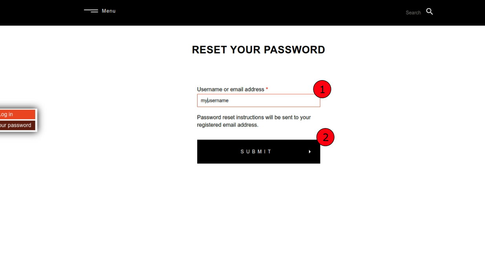 |
|
3.3 General - Edit user account
| Url | /user/8/edit |
| Menu | MyUsername > Edit Profile |
| Tips |
|
| Info | This is how to change your Account values or add a new user. It is the same process. |
| Image: Edit user account | |
| 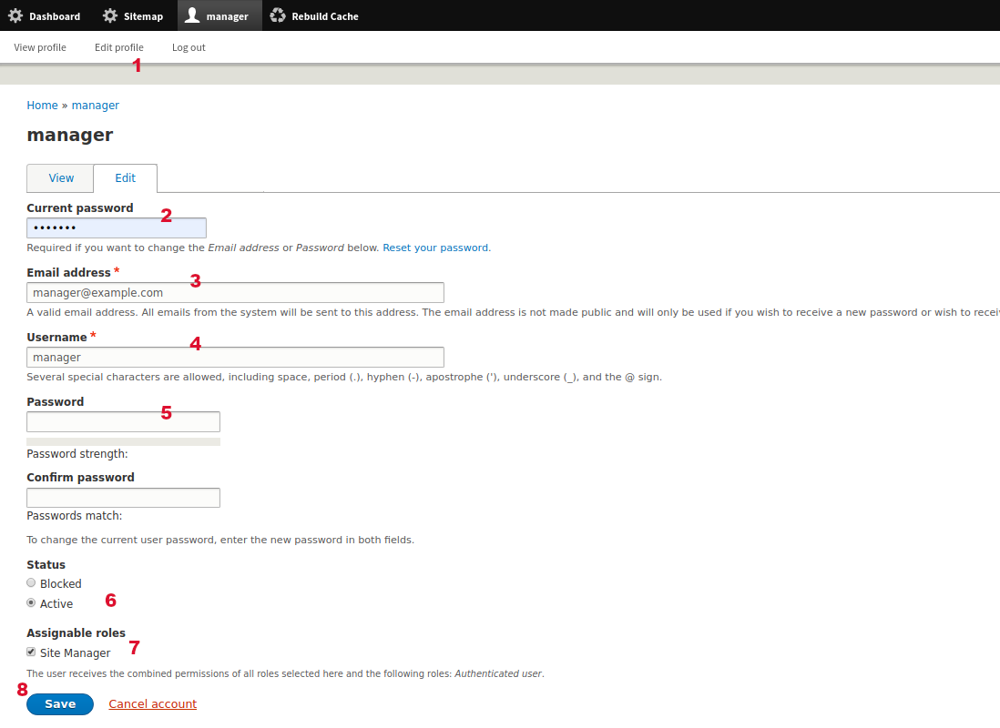 |
|
3.4 General - System Users
| Url | /admin/dashboard/users |
| Menu | Dashboard > Settings > System Users |
| Info | In this page you can see and filter all the system users (accounts with login permission). The results display in a dynamic table. On the table header some column labels are links. When you click these you can sort by each column value. Every time you are filtering the results you can see the result number as also as the results on each page (if there are more pages). You cannot delete or edit user with ID 1 (Drupal root user). Users with the role "Manager" cannot delete themselves but only other Managers. |
| Image: System users | |
 |
|
3.5 Dashboard - Overview
| Url | /admin/dashboard |
| Menu | Dashboard |
| Tips |
|
| Info |
|
| Image: Dashboard overview | |
| 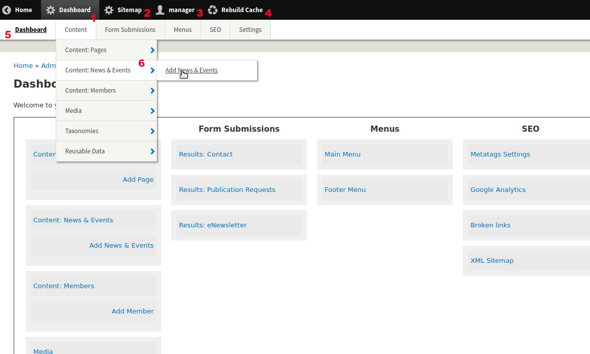 |
|
3.6 General - Using the rich text editor (CKEditor)
| Tips |
|
| Info | This CKEditor Version 4 works the same as with MS Word or any other text editor and allows user to style text as he/she wants.
Learn more about CKEditor at https://ckeditor.com/ckeditor-4/. |
| Image: Basic buttons | |
| 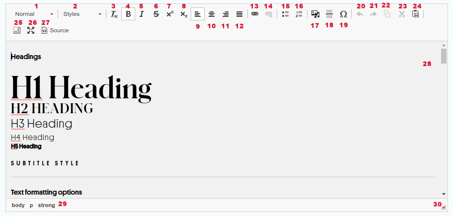 |
|
| Image: Custom styles available | |
| 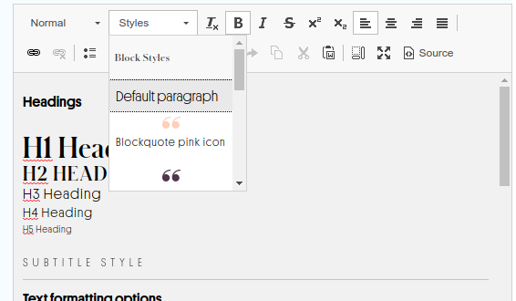 |
|
| Image: Custom styles - Texts and Headers (applies to simple text paragraphs) | |
| 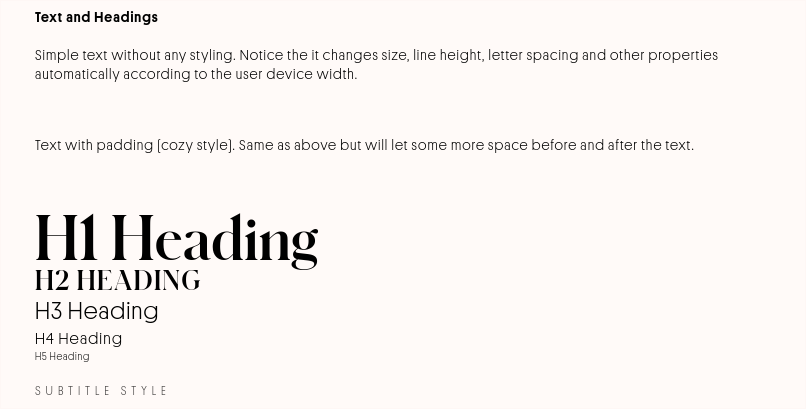 |
|
| Image: Custom styles - Links and Buttons (applies to hyperlinks only) | |
| 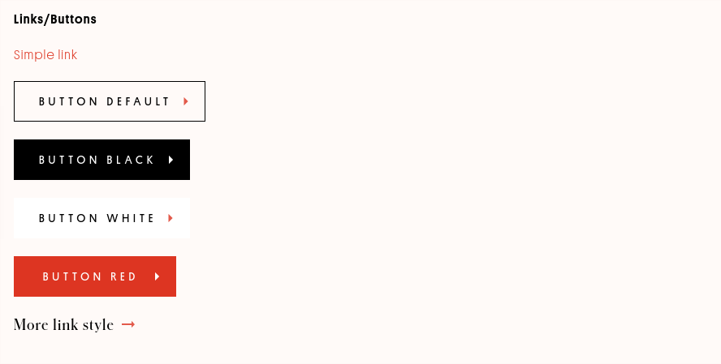 |
|
| Image: Custom styles - Lists | |
| 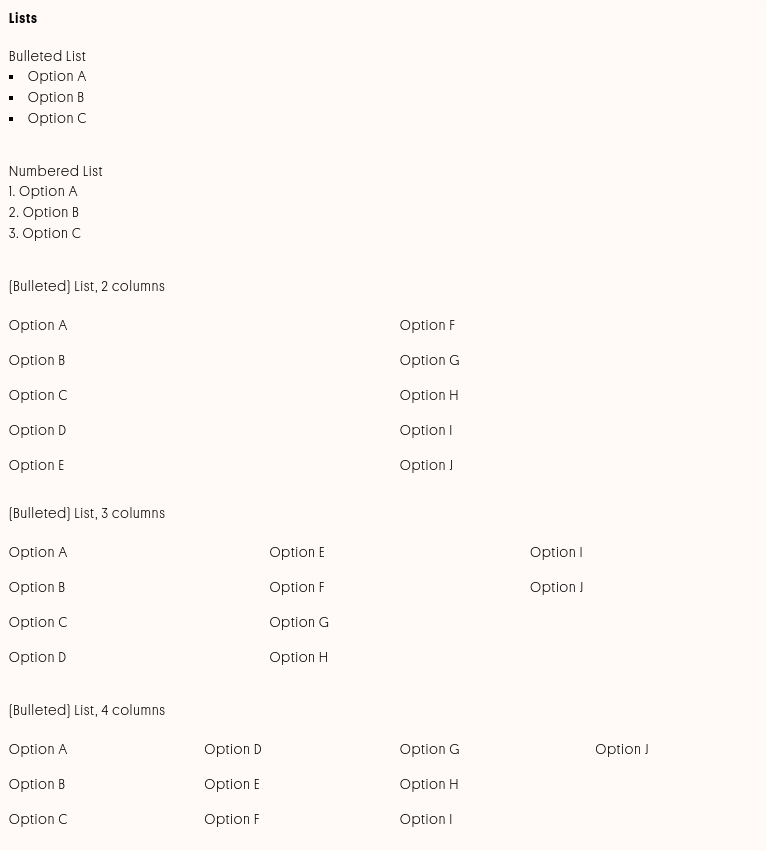 |
|
| Image: Custom styles - Blockquotes (apply to simple text paragraphs) | |
| 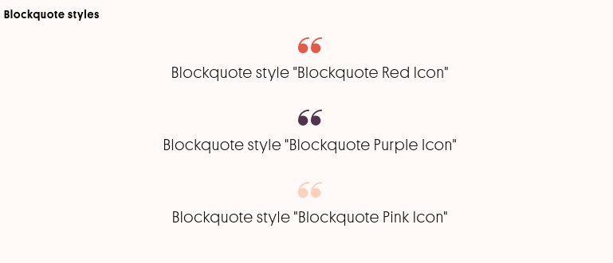 |
|
| Image: CKEditor, Embed Drupal Media | |
| 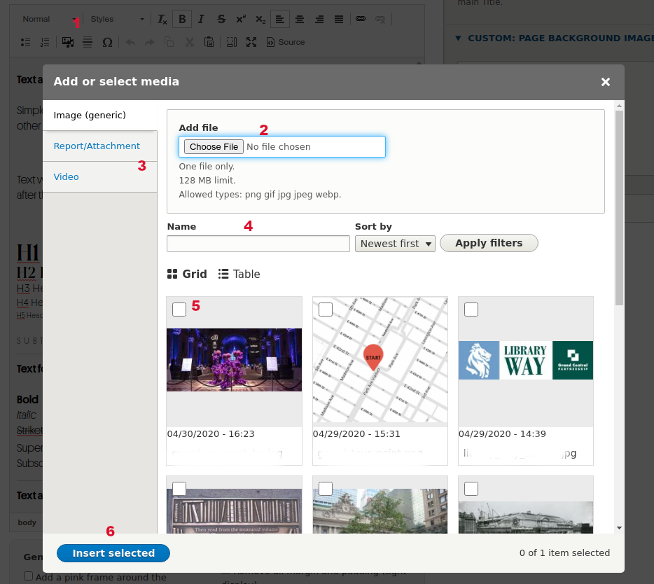 |
|
4 Content Types (Nodes) of type Page
4.1 Node type Page: Administer Pages
| Url | /admin/dashboard/pages |
| Menu | Dashboard > Content > Content: Pages |
| Tips |
|
| Info | In this Administration page you can see all the site nodes of type "Page" with their basic fields. Page node type is a template that creates landing pages with structured fields. These structured fields are called Paragraphs. Examples of this type are "About Us", "Management Team" etc. The results are displayed in a dynamic table. On the table header some column labels are links. When you click these you can sort by each column value. Every time you are filtering the results you can see the result number as also as the results on each page (if there are more pages). |
| Image: Administer Pages | |
| 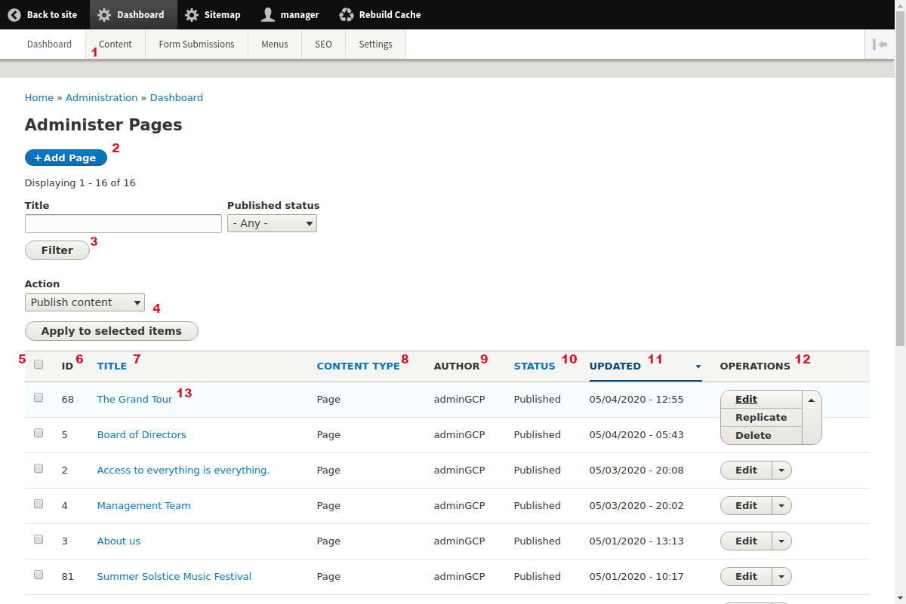 |
|
4.2 Node type Page: Add new node
| Url | /node/add/page |
| Menu | Dashboard > Content > Content: Pages > Add Page |
| Tips |
|
| Info | Page node type is a template that creates landing pages with structured fields. These structured fields are named Paragraphs (or Elements) and will be analyzed later on the section. Examples of this type are "About Us", "Management Team" etc. Every node has a unique identifier (ID) that is created by Drupal (incrementally) when you create a new node. You can use this for unique reference. ID cannot change upon creation. The form to add a new Page has the left sidebar fields as also as the right sidebar fields. Right sidebar fields are common for every node type (template). Most of the fields on this form provide a description to Authors about the field (how to use, what it does, restrictions etc). There is a demo Page (Unpublished) that can be used by Authors for reference and experiments. |
| Image: Add new Page form | |
| 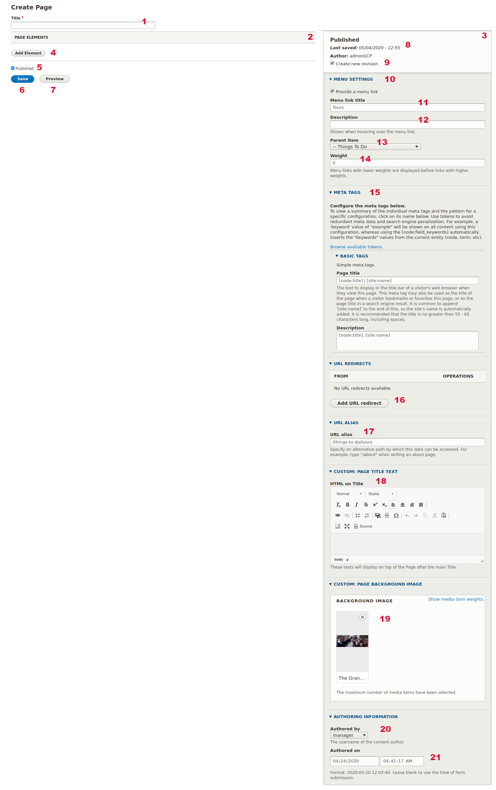 |
|
4.3 Node type Page: Existing node options
| Url | /node/[id] |
| Menu | (node specific) |
| Tips |
|
| Image: Existing node options | |
| 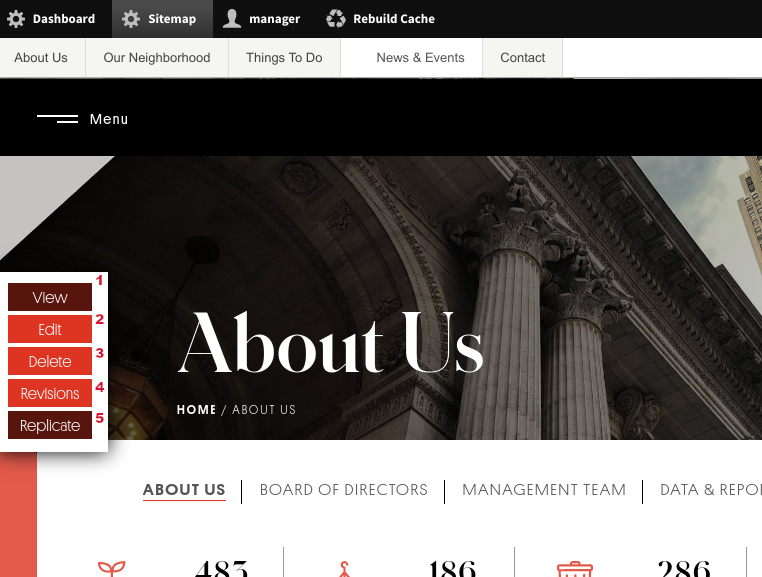 |
|
4.4 Node type Page: Edit an existing node
| Url | /node/[id]/edit |
| Tips |
|
| Info | Edit form is the same as Add New form. Please go to this section to see more. You can "Edit" an existing node:
|
4.5 Node type Page: Delete an existing node
| Url | /node/[id]/delete |
| Tips |
|
| Info | You can "Delete" an existing node:
When you decide to "Delete" a node you go to a confirmation form (see below) where you need to confirm your decision. |
| Image: Delete an existing node, confirmation form | |
| 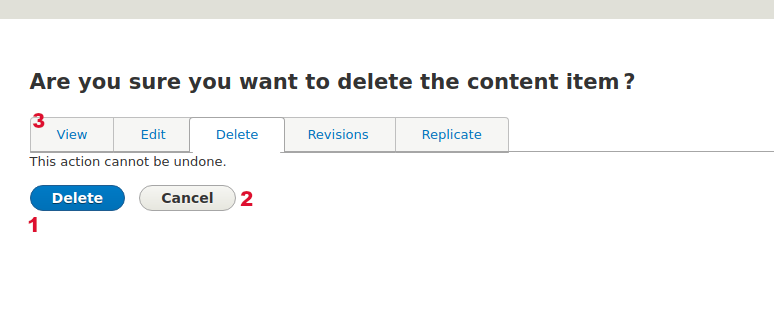 |
|
4.6 Node type Page: Create and revert Revisions
| Url | /node/[id]/revisions |
| Tips |
|
| Info | Revisions are independent (standalone) instances of a node stored on the database within their other references (eg images). Revisions allow Authors to go back later to an older revision if needed to. Revisions allow Authors to compare changes through the time, revert to a previous revision as also as inspect other Authors changes without the need to contact them or moderate content. The latest revision is the "Current Revision". All current Revisions are these that display on the website. You can visit the "Revisions" page of an existing node:
|
| Image: Revisions of a node | |
| 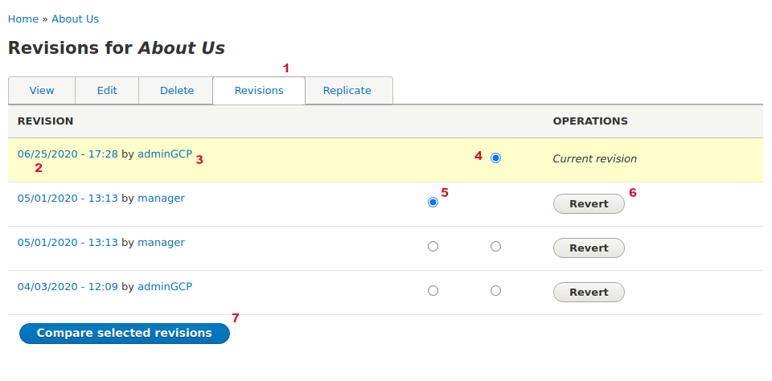 |
|
| Image: Compare Revisions - Layout visual inline | |
| 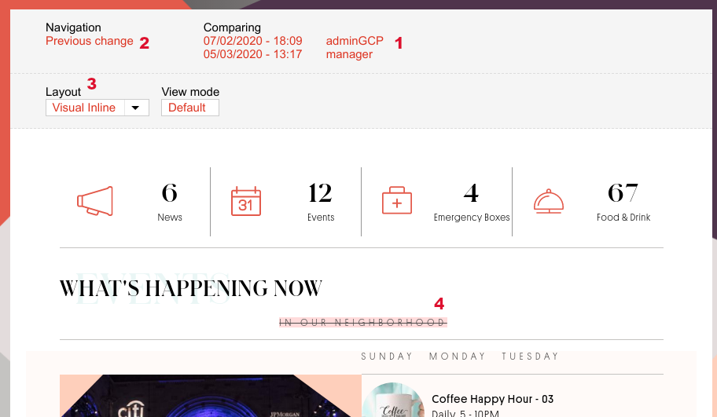 |
|
| Image: Compare Revisions - Layout split fields | |
| 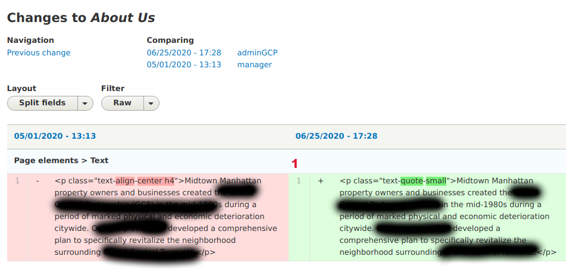 |
|
| Image: Compare Revisions - Layout unified fields | |
| 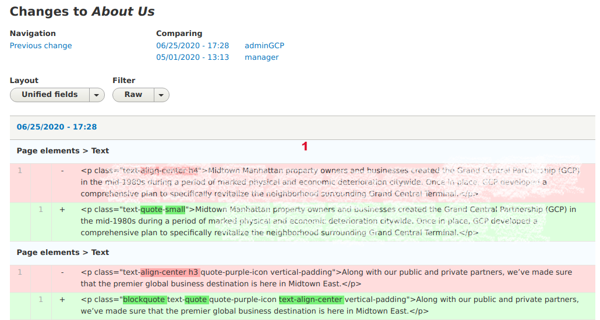 |
|
5 Content Types (Nodes) of type News & Events
5.1 Node type News & Events: Administer News & Events
| Url | /admin/dashboard/news_events |
| Menu | Dashboard > Content > Content: News & Events |
| Tips |
|
| Info | In this Administration page you can see all the site nodes of type "News & Events" with some of their basic or custom fields. The results are displayed in a dynamic table. On the table header some column labels are links. When you click these you can sort by each column value. Every time you are filtering the results you can see the result number as also as the results on each page (if there are more pages). |
| Image: Administer News & Events | |
| 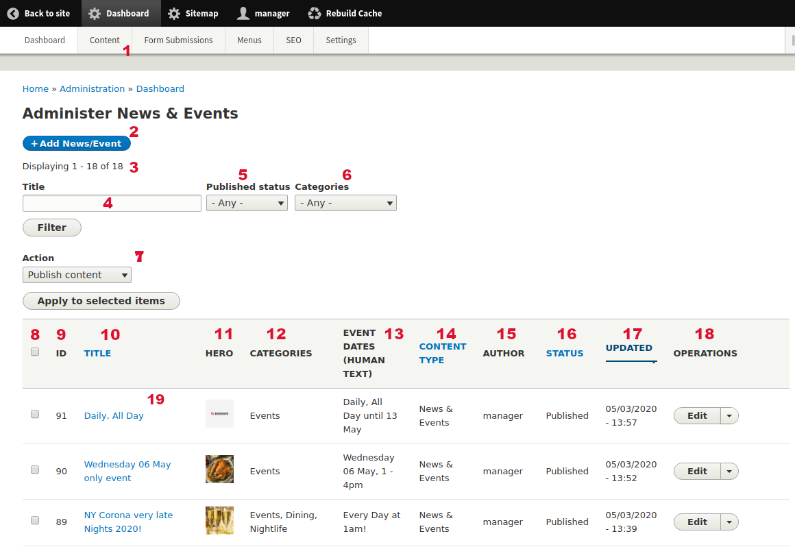 |
|
5.2 Node type News & Events: Add new node
| Url | /node/add/news |
| Menu | Dashboard > Content > Content: News & Events > Add News & Events |
| Tips |
|
| Info | "News & Events" node type is a template that creates News or Events pages with simple fields. The teasers of these pages are displayed on a dynamic page the "News & Events" ( Every node has a unique identifier (ID) that is created by Drupal (incrementally) when you create a new node. You can use this for unique reference. ID cannot change upon creation. The form to add a new node has the left sidebar fields as also as the right sidebar fields. Most of the fields on this form provide a description to Authors about the field (how to use, what it does, restrictions etc). |
| Image: Add new "News & Events" form | |
| 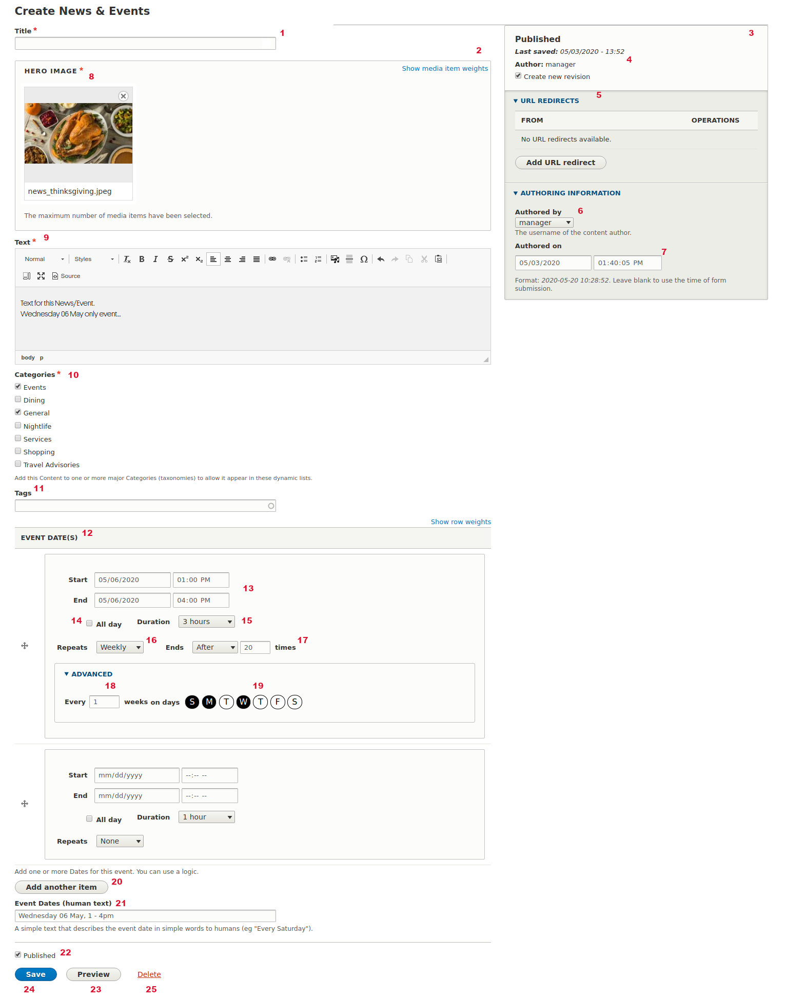 |
|
5.3 Node type News & Events: Edit an existing node
| Url | /node/[id]/edit |
| Tips |
|
| Info | Edit form is the same as Add New form. Please go to this section to see more. You can "Edit" an existing node:
|
5.4 Node type News & Events: Delete an existing node
| Url | /node/[id]/delete |
| Tips |
|
| Info | You can "Delete" an existing node:
When you decide to "Delete" a node you go to a confirmation form (see below) where you need to confirm your decision. |
| Image: Delete an existing node, confirmation form | |
| |
5.5 Node type News & Events: Preview node
| Tips |
|
| Info | You can Preview a node before saving it and see how it looks in several View Modes. Check Terminology to learn more about View Modes. |
| Image: Preview a node | |
| 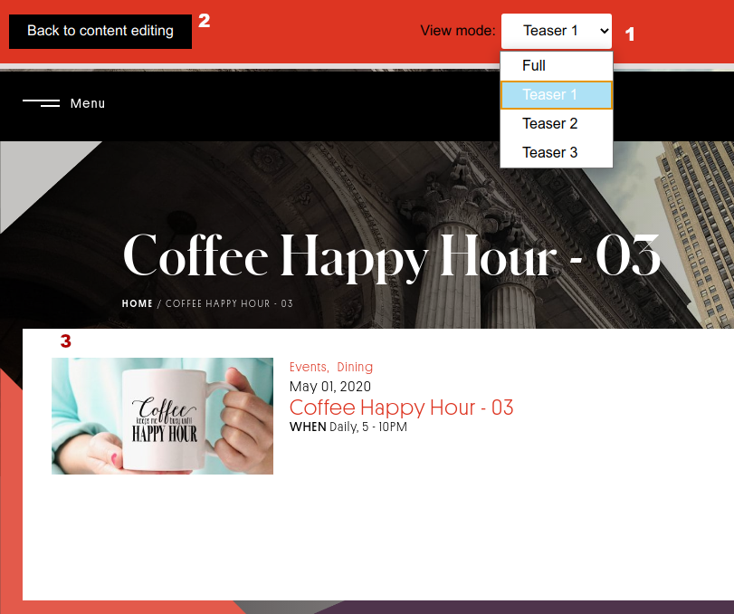 |
|
6 Content Types (Nodes) of type Member
6.1 Node type Members: Administer Members
| Url | /admin/dashboard/members |
| Menu | Dashboard > Content > Content: Members |
| Tips |
|
| Info | In this Administration page you can see all the site nodes of type "Members" with some of their basic or custom fields. The results are displayed in a dynamic table. On the table header some column labels are links. When you click these you can sort by each column value. Every time you are filtering the results you can see the result number as also as the results on each page (if there are more pages). |
| Image: Administer Members | |
| 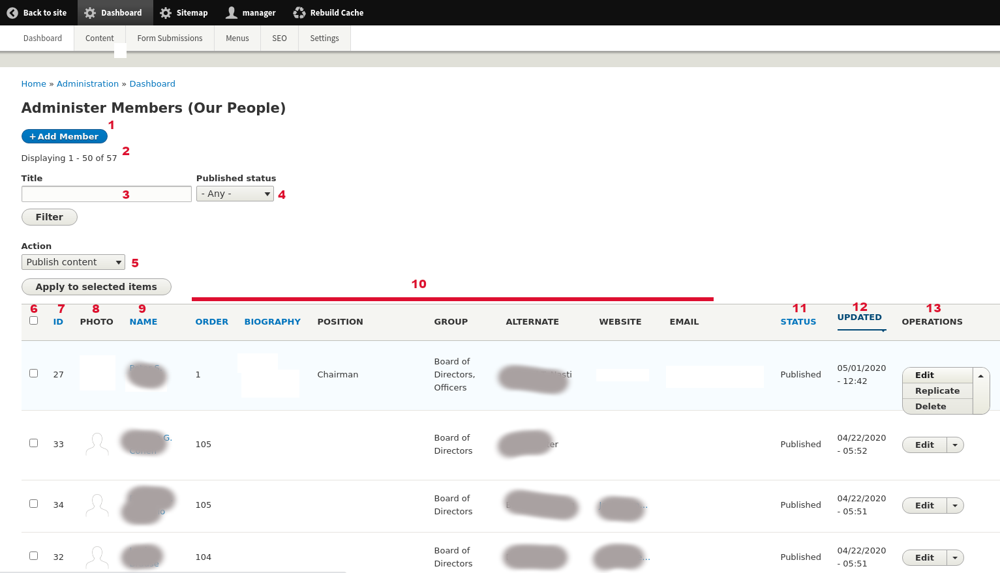 |
|
6.2 Node type Member: Add new node
| Url | /node/add/member |
| Menu | Dashboard > Content > Content: Members > Add Member |
| Tips |
|
| Info | "Member" node type is a template that creates Member pages (Our People) with simple fields. Every node has a unique identifier (ID) that is created by Drupal (incrementally) when you create a new node. You can use this for unique reference. ID cannot change upon creation. The form to add a new node has the left sidebar fields as also as the right sidebar fields. Most of the fields on this form provide a description to Authors about the field (how to use, what it does, restrictions etc). |
| Image: Add new "Member" form | |
| 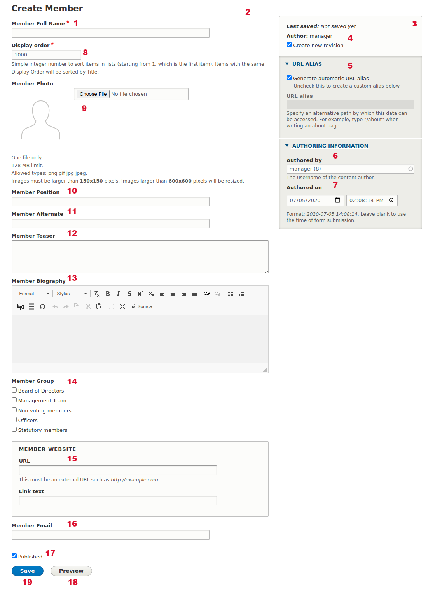 |
|
6.3 Node type Member: Edit an existing node
| Url | /node/[id]/edit |
| Tips |
|
| Info | Edit form is the same as Add New form. Please go to this section to see more. You can "Edit" an existing node:
|
6.4 Node type Member: Delete an existing node
| Url | /node/[id]/delete |
| Tips |
|
| Info | You can "Delete" an existing node:
When you decide to "Delete" a node you go to a confirmation form (see below) where you need to confirm your decision. |
| Image: Delete an existing node, confirmation form | |
| |
7 Media Types (Media)
7.1 Media: Media Dashboard
| Url | /admin/dashboard/media |
| Menu | Dashboard > Content > Media |
| Tips |
|
| Info | In this Administration page you can see all the site Media. Media is a template that creates reusable rich media content like Images, Video (from 3rd party providers) and Files (Attachment). Each media type has specific fields and requirements. Available Media types are "Background Image", "Hero Image", "Image (Generic)", "Report/Attachment" and "Video." Media do not have a standalone page like Nodes, but they are used as reference fields inside other types (Nodes or Elements). Examples of media is a Hero banner attached to the Homepage or a Video for the Grand Gourmet node page. The results display in a dynamic grid. Every time you are filtering the results you can see the result number as also as the results on each page (if there are more pages). |
| Image: Administer Media | |
| 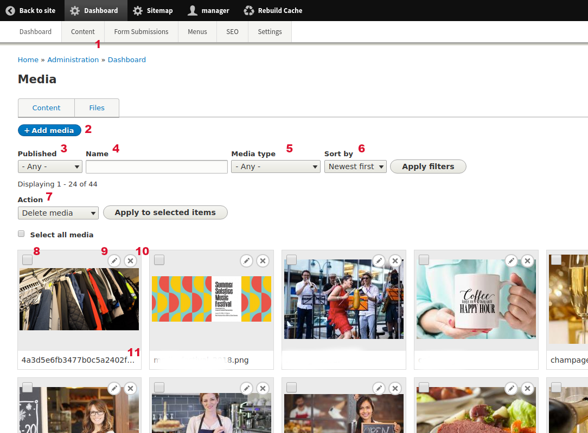 |
|
7.2 Media: Add Media
| Url | /media/add/ |
| Menu | Dashboard > Content > Media > Add Media |
| Tips |
|
| Info | Media is a template that creates reusable rich media content like Images, Video (from 3rd party providers) and Files (Attachment). Each media type has specific fields and requirements. Available Media types are "Background Image", "Hero Image", "Image (Generic)", "Report/Attachment" and "Video." Media do not have a standalone page like Nodes, but they are used as reference fields inside other types (Nodes or Elements). Examples of media is a Hero banner attached to the Homepage or a Video for the Grand Gourmet node page. Every Media has a unique identifier (ID) that is created by Drupal (incrementally) when you create a new Media. You can use this for unique reference. ID cannot change upon creation. Most of the fields on this form provide a description to Authors about the field (how to use, what it does, restrictions etc). |
| Image: Add new Media form | |
| 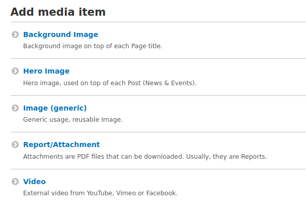 |
|
| Image: Add/Edit Media of type "Background image" | |
| 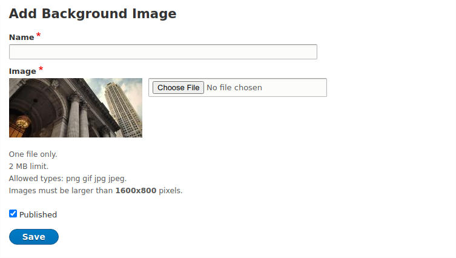 |
|
| Image: Add/Edit Media of type "Hero image" | |
| 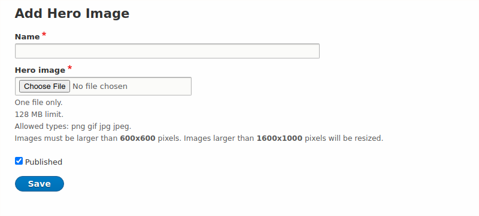 |
|
| Image: Add/Edit Media of type "Image (generic)" | |
| 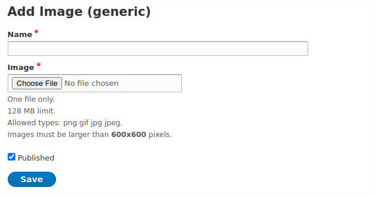 |
|
| Image: Add/Edit Media of type "Video" | |
| 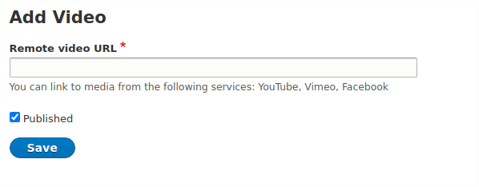 |
|
| Image: Add/Edit Media of type "Report/Attachment" | |
| 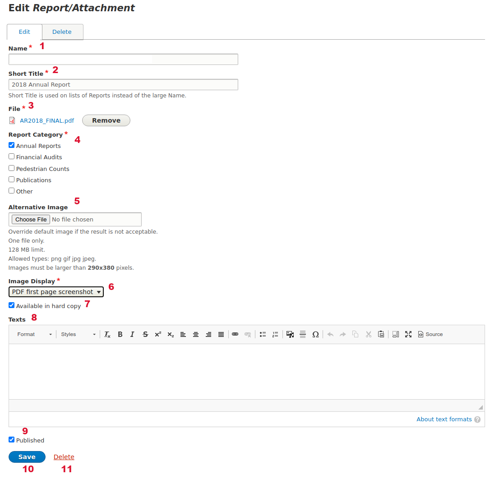 |
|
8 Taxonomy Terms
8.1 Taxonomy: Administer Taxonomies
| Url | /admin/dashboard/taxonomies |
| Menu | Dashboard > Content > Taxonomies |
| Tips |
|
| Info | In this Administration page you can see all the Taxonomy Terms. See more about Taxonomy on the section below. The results are displayed in a dynamic table. On the table header some column labels are links. When you click these you can sort by each column value. Every time you are filtering the results you can see the result number as also as the results on each page (if there are more pages). |
| Image: Administer Taxonomies | |
| 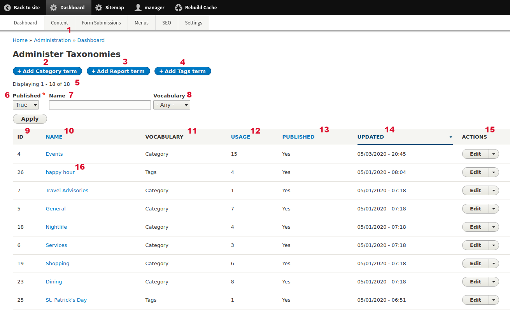 |
|
8.2 Taxonomy: Add Taxonomy Term
| Menu | Dashboard > Content > Taxonomies > Add Category Term |
| Tips |
|
| Info | Taxonomies are keywords used to categorize content of the website (Nodes, Media etc). Other common words are 'terms', 'tags' etc. In Drupal CMS these are called 'taxonomy terms'. For example all "News & Event" nodes may have a "Services" taxonomy where users can read only news that have the category "Services" while other prefer to read News of category "Nightlife". Each Taxonomy Term usually has its own dynamic page. There are three types of taxonomies which are called "Vocabularies" on this website:
Every Taxonomy Term has a unique identifier (ID) that is created by Drupal (incrementally) when you create a new Taxonomy. You can use this for unique reference. ID cannot change upon creation. Most of the fields on this form provide a description to Authors about the field (how to use, what it does, restrictions etc). |
| Image: Add/Edit taxonomy term (all types) | |
| 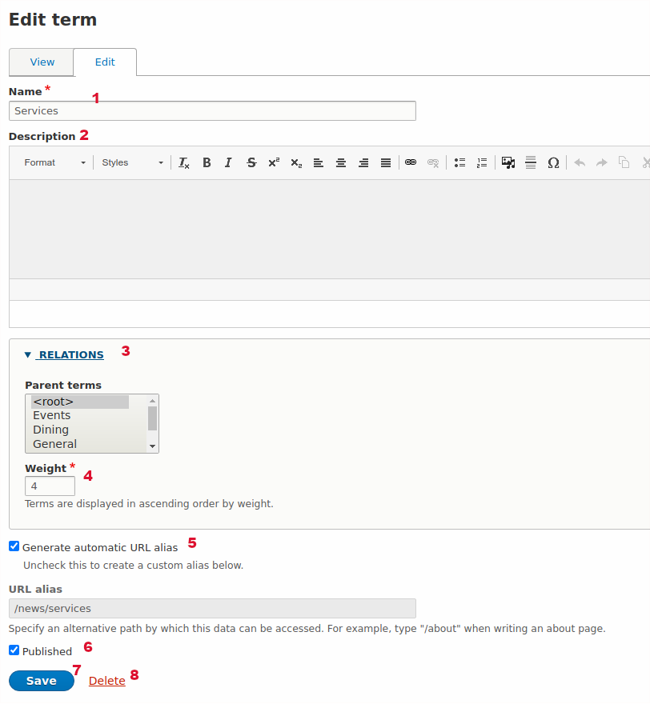 |
|
9 Reusable Data
| Info | Reusable are templates that create and store extra "reusable" simple content entities. Each Reusable type has specific fields and requirements. Available Reusable types are "Counter", "Sponsor", and "Iframe". Reusable do not have a standalone page like Nodes, but they are used as reference fields inside other types (Nodes or Elements). Reusable do have Revisions too like Nodes and Media. Every time you are filtering the results you can see the result number as also as the results on each page (if there are more pages). |
9.1 Reusable Data: Reusable Counters
| Url | /admin/dashboard/counters |
| Menu | Dashboard > Content > Reusable Data > Reusable: Counters |
| Info | In this Administration page you can see all the site Reusable of type "Counter". Every time you are filtering the results you can see the result number as also as the results on each page (if there are more pages). |
| Image: Administer Counters | |
| 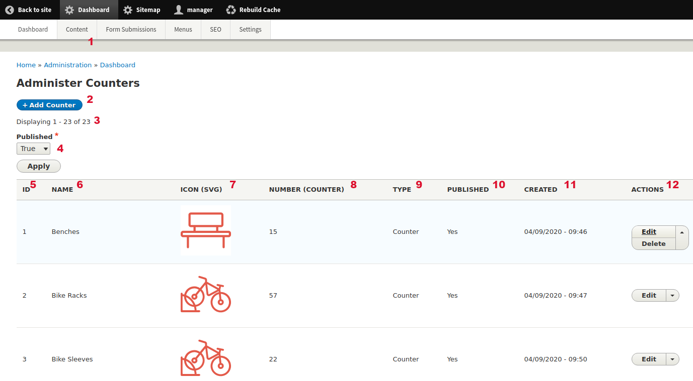 |
|
9.2 Reusable Data: Add/Edit Counter
| Url | /admin/extra/add/counter |
| Tips |
|
| Image: Add/Edit Reusable Data of type "Counter" | |
| 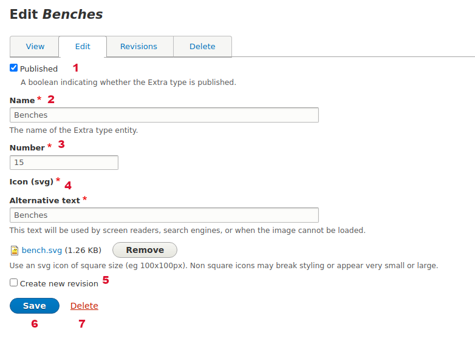 |
|
9.3 Reusable Data: Reusable iFrames
| Url | /admin/dashboard/iframes |
| Menu | Dashboard > Content > Reusable Data > Reusable: iFrames |
| Tips |
|
| Info | In this Administration page you can see all the site Reusable of type "iFrame". Every time you are filtering the results you can see the result number as also as the results on each page (if there are more pages). |
| Image: Administer iFrames | |
| 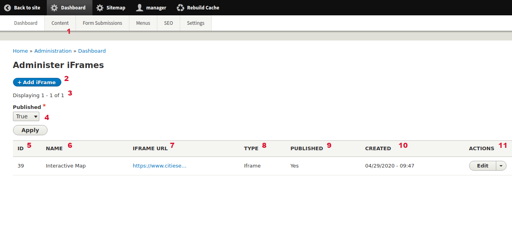 |
|
9.4 Reusable Data: Add/Edit iFrame
| Url | /admin/extra/add/iframe |
| Tips |
|
| Image: Add/Edit Reusable Data of type "iFrame" | |
| 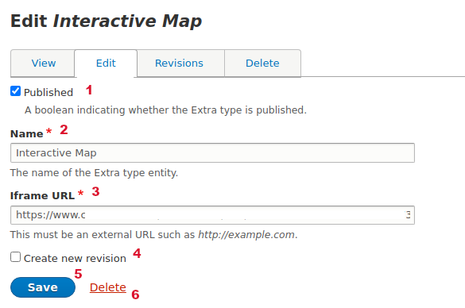 |
|
9.5 Reusable Data: Reusable Sponsors
| Url | /admin/dashboard/sponsors |
| Menu | Dashboard > Content > Reusable Data > Reusable: Sponsors |
| Info | In this Administration page you can see all the site Reusable of type "Sponsor". Every time you are filtering the results you can see the result number as also as the results on each page (if there are more pages). |
| Image: Administer Sponsors | |
| 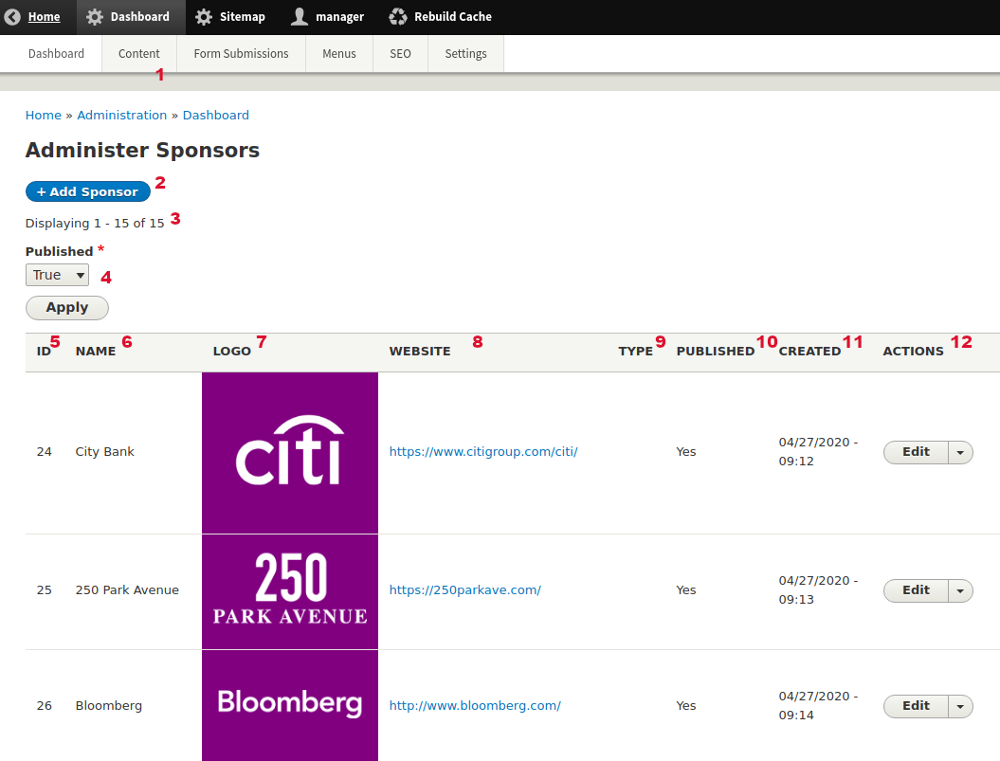 |
|
9.6 Reusable Data: Add/Edit Sponsor
| Url | /admin/extra/add/sponsor |
| Tips |
|
| Image: Add/Edit Reusable Data of type "Sponsor" | |
| 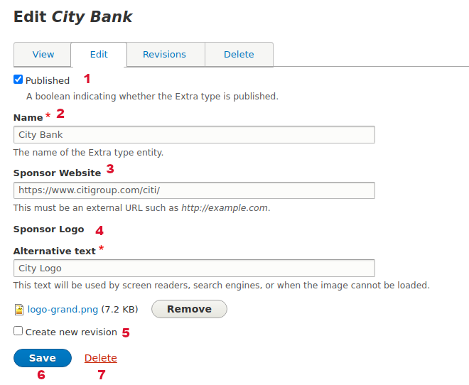 |
|
9.7 Reusable Data: Blocks (Static)
| Url | /admin/dashboard/blocks |
| Menu | Dashboard > Content > Reusable Data > Blocks (static) |
| Tips |
|
| Info | In this Administration page you can see all the site "Blocks". Drupal Blocks are boxes of content rendered into an area, or region, of a web page but on the same position. Blocks on this Administration page are static (their content will not change dynamically). Blocks on this Administration page are always on the same place on the website (eg on footer section). You are not allowed to move these to another place. Block content changes rarely. If you change a Block too many times consider using another storage type to display the Block data. |
| Image: Administer System Blocks | |
| 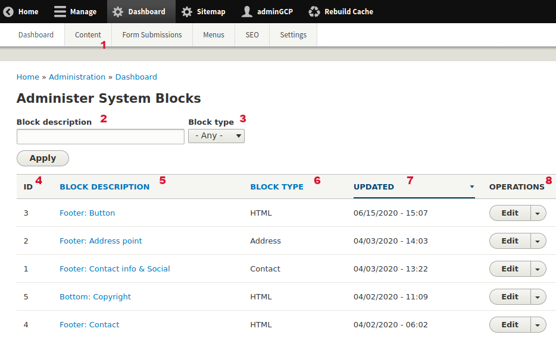 |
|
9.8 Reusable Data: Add/Edit Block of type HTML
| Image: Add/Edit Block of type HTML" | |
| 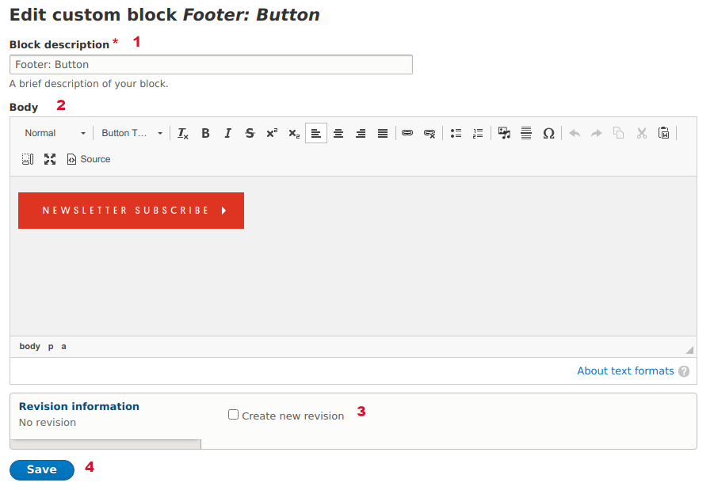 |
|
| Image: Block of type HTML - Rendering example 1 (footer region)" | |
| 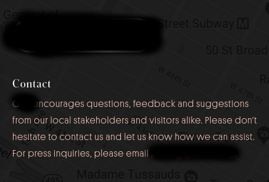 | |
| Image: Block of type HTML - Rendering example 2 (footer region)" | |
| 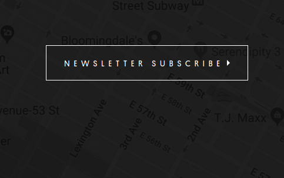 | |
9.9 Reusable Data: Add/Edit Block of type Contact
| Url | /block/1 |
| Image: Add/Edit Block of type Contact" | |
| 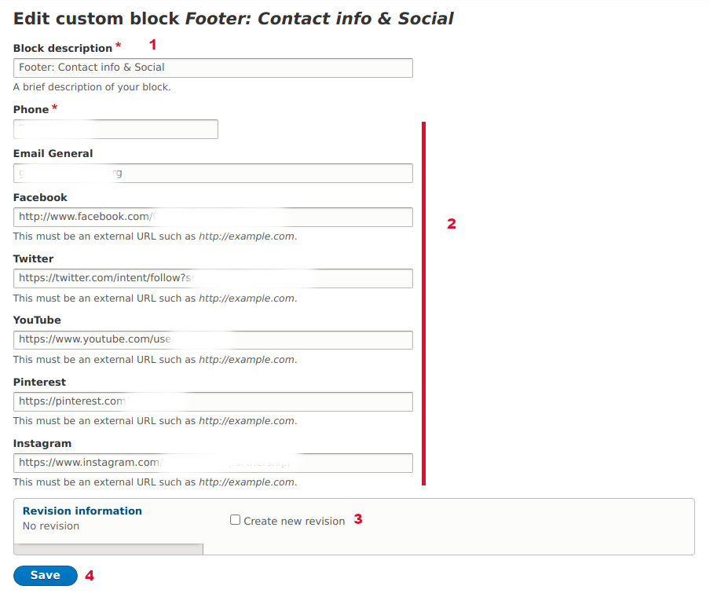 |
|
| Image: Block of type Contact - Rendering example (footer region)" | |
| 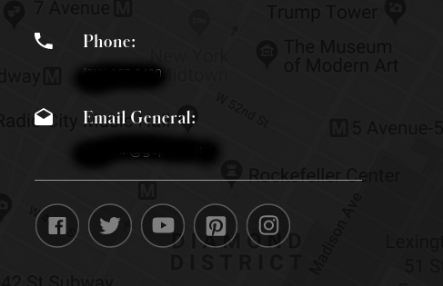 | |
9.10 Reusable Data: Add/Edit Block of type Address
| Url | /block/2 |
| Image: Add/Edit Block of type Address" | |
| 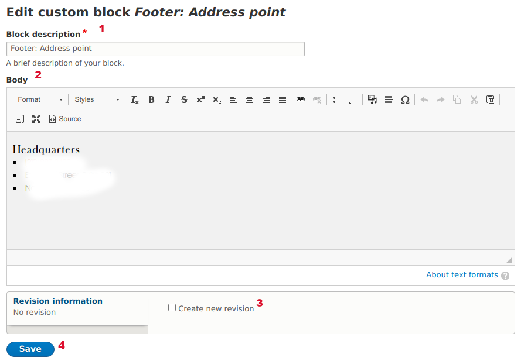 |
|
| Image: Block of type Address - Rendering example (footer region)" | |
| 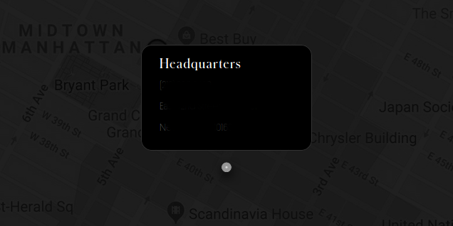 | |
10 Elements
10.1 Elements (or Paragraphs) overview
| Info | Drupal "Paragraphs" are special Drupal fields which combine other fields and display as a whole. In simple words, Paragraphs are group of fields that can represent an output. For example, a Paragraph of type "Picture with Caption" may use an Image field and a textfield and display an Image with a Caption after it. Paragraphs in Drupal offer a great authoring experience, since they control data as also as markup in details. Furthermore, authors can "duplicate" Paragraphs and "reorder" them within the Node page which allows for fast page structure building and easy visual changes. In this project we call Paragraphs "Elements" to avoid any conflict with text paragraphs inside the textarea. Each Element type has specific fields and requirements. It may reference Media, Nodes or Reusable data. Element do not have a standalone page like Nodes, but they are only used as special fields inside Nodes. Each Element is unique and can be attached only to one Node. There are no shared (reusable) Elements. Elements do not need a name (title) like Nodes or Media nor do not have system fields (Published status, Created datetime, Author etc) You can only create or edit them inside a Node form. Some Elements have the same or similar name to Reusable Data types. This is because these Elements reference Reusable Data. Available Element types are:
See more details about each Element type in the following sections. |
10.1 Elements: Add/Edit Element of type "Events List"
| Tips |
|
| Info | Use this simple type of Element to display four items of the Nodes of type "News & Events". Only Events that have values on the "Event Date(s)" field appear to this dynamic list. Events grouped by day and display in tabs (each day is one tab) and sort by "event date" (upcoming come first). Authors have option to choose if they want to "Show only Today events" or "Show Today, Tomorrow and the Day after" events (if any). Element of type "Events" has the "General Styling" options. See Element "Free Text/Title" above to learn more about this field. |
| Image: Add/Edit Element of type "Events List". Form vs Visual output mapping. | |
| 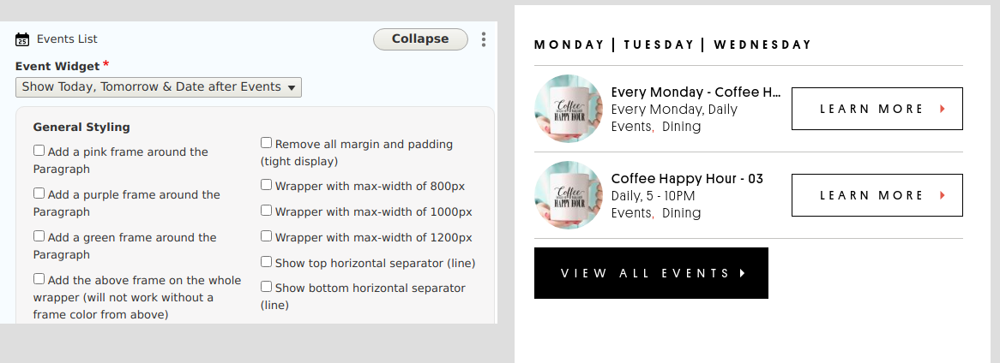 | |
10.2 Elements basic options and operations
| Tips |
|
| Info | When you create a new or edit an existing Element inside a Node several options are available. These options are common for all Elements. By default, when you edit an Element or other siblings collapse. This allows Author to focus on the current Element. |
| Image: Element basic options | |
 |
|
| Image: Add Element modal | |
| 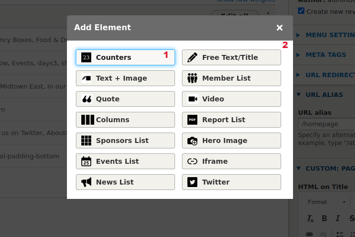 |
|
10.3 Elements: Add/Edit Element of type "Free Text/Title"
| Tips |
|
| Info | Use this type of Element to add simple text or plain Titles above other Elements. Element of type "Free Text/Title" has the "General Styling" options. "General Styling" field holds special css classes that affect the output of the Element. They are shared across most of the Elements (except from some Elements that do not need them). Notice that some General Styling options do not apply on every Element. Eg the "2 columns of 50% width each" option works only when there are more than one column on the Element. |
| Image: Add/Edit Element of type "Free Text/Title". Form vs Visual output mapping. | |
10.4 Elements: Add/Edit Element of type "Quote"
| Tips |
|
| Info | Use this type of Element to add a Blockquote. Not suitable for large texts. Quote Element texts align on center by default. Element of type "Quote" has the "General Styling" options. See Element "Free Text/Title" above to learn more about this field. |
| Image: Add/Edit Element of type "Quote". Form vs Visual output mapping. | |
10.5 Elements: Add/Edit Element of type "iFrame"
| Tips |
|
| Info | Use this simple type of Element to display one of the Reusable Data of type "iFrame". If the Reusable Data item is not available you need to create it firstly. Element of type "iFrame" has the "General Styling" options. See Element "Free Text/Title" above to learn more about this field. |
| Image: Add/Edit Element of type "iFrame". Form vs Visual output mapping. | |
10.6 Elements: Add/Edit Element of type "Video"
| Tips |
|
| Info | Use this simple type of Element to display one of the Media of type "Video". If the Media Video item is not available you need to create it firstly. Element of type "Video" has the "General Styling" options. See Element "Free Text/Title" above to learn more about this field. |
| Image: Add/Edit Element of type "Video". Form vs Visual output mapping. | |
10.7 Elements: Add/Edit Element of type "Hero Image"
| Tips |
|
| Info | Use this simple type of Element to display one of the Media of type "Hero Image". If the Media Hero Image item is not available you need to create it firstly. You can do this directly from this field though. No need to go visit another page to accomplish this. |
| Image: Add/Edit Element of type "Hero Image". Form vs Visual output mapping. | |
10.8 Elements: Add/Edit Element of type "Counters"
| Tips |
|
| Info | Use this simple type of Element to display four items of the Reusable Data of type "Counter". If the Reusable Data item is not available you need to create it firstly. Element of type "Counters" has the "General Styling" options. See Element "Free Text/Title" above to learn more about this field. |
| Image: Add/Edit Element of type "Counters". Form vs Visual output mapping. | |
10.9 Elements: Add/Edit Element of type "Sponsors List"
| Tips |
|
| Info | Use this simple type of Element to display four items of the Reusable Data of type "Sponsor". If the Reusable Data item is not available you need to create it firstly. Element of type "Sponsors" has the "General Styling" options. See Element "Free Text/Title" above to learn more about this field. Grand Sponsor logo is larger that others. Any other Sponsor display one next to the other using the same sorting from the "Add/Edit Element" form. |
| Image: Add/Edit Element of type "Sponsors List". Form vs Visual output mapping. | |
10.11 Elements: Add/Edit Element of type "News List"
| Tips |
|
| Info | Use this simple type of Element to display the latest (by date) four items of the Nodes of type "News & Events". By default, only the latest four items display. If you want to show more or fewer use the "Advanced Options" input field. Element of type "News List" has the "General Styling" options. See Element "Free Text/Title" above to learn more about this field. |
| Image: Add/Edit Element of type "News List". Form vs Visual output mapping. | |
10.12 Elements: Add/Edit Element of type "Member List"
| Tips |
|
| Info | Use this dynamic type of Element to display Nodes of type "Members". Authors can choose if they want to "Show Alternates" under each Member fullname. Authors can select how they want to display Members. The available options are:
Foreach display type above they can also select which Groups of Members they want to display. The Groups come from field "Member Group" of Node of type Member.
By default, all the Members of that Group will display. If you want to show more or fewer items use the "Advanced Options" input field. Element of type "Members List" has the "General Styling" options. See Element "Free Text/Title" above to learn more about this field. |
| Image: Add/Edit Element of type "Member List". Form vs Visual output mapping. | |
10.13 Elements: Add/Edit Element of type "Report List"
| Tips |
|
| Info | Use this dynamic type of Element to display Media of type "Report/Attachment". Authors can select which Report Display they want to use. The available options are:
By default, all the Reports of each group will display. If you want to show more or fewer items use the "Advanced Options" input field. Element of type "Reports List" has the "General Styling" options. See Element "Free Text/Title" above to learn more about this field. |
| Image: Add/Edit Element of type "Report List". Form vs Visual output mapping. | |
10.14 Elements: Add/Edit Element of type "Columns"
| Tips |
|
| Info | This is an Element to create advanced structured data using other Elements. It is a builder with endless combinations. It allows Authors to create two or more Columns with data and stack them automatically according to the General Styling selected options. A Column can contain other Columns too. The available Elements inside a Column are:
Notice that in order to keep your pages simple and manageable do not use more than a four column list. Also, keep the inner Elements as simple as possible otherwise design can break easily for each Column. Element of type "Columns" has the "General Styling" options. See Element "Free Text/Title" above to learn more about this field. |
| Image: Add/Edit Element of type "Columns". Form vs Visual output mapping. | |
10.15 Elements: Add/Edit Element of type "Twitter"
| Tips |
|
| Info | Use this simple type of Element to display the latest four tweets from your official Twitter account. Settings for the widget set in another settings page. |
| Image: Add/Edit Element of type "Twitter". Form vs Visual output mapping. | |
10.16 Elements: Add/Edit Element of type "Text + Image"
| Tips |
|
| Info | This Element type is like Columns but its fields and display is predefined. It has an Image (Media) and Text as also as some styling options. If you need to create more advanced Image & Text combinations use the "Columns" Element instead. Notice that you need to set the two columns using the "General Styling" options otherwise the items will stack one under the other. |
| Image: Add/Edit Element of type "Text + Image". Form vs Visual output mapping. | |
11 Forms
11.1 Form Publication Request - Clear Submissions
| Url | /admin/structure/webform/manage/request/results/clear |
| Info | In this Administration page you can purge all the submissions of form "Publication Request". This action cannot be undone. |
11.1 Forms - Overview
| Info |
There are three different forms on this website:
|
| Image: Forms available on the website | |
11.2 Form Contact - Submissions
| Url | /admin/dashboard/submissions-contact |
| Menu | Dashboard > Form Submissions > Results: Contact |
| Info | In this Administration page you can see all the submissions of form "Contact" with their basic fields. Results display in a dynamic table. On the table header some column labels are links. When you click these you can sort by each column value. Every time you are filtering the results you can see the result number as also as the results on each page (if there are more pages). |
| Image: Form Submissions of form "Contact" | |
| |
11.3 Form Contact - Clear Submissions
| Url | /admin/structure/webform/manage/contact/results/clear |
| Info | In this Administration page you can purge all the submissions of form "Contact" This action cannot be undone. |
| Image: Clear (delete) Submissions of form "newsletter" | |
 | |
11.4 Form Contact - Download Submissions
| Url | /admin/dashboard/submissions-contact/download |
| Info | In this Administration page you can download submissions of form "Contact". |
| Image: Download Submissions of form "Contact" | |
| |
11.5 Form eNewsletter - Submissions
| Url | /admin/dashboard/submissions-newsletter |
| Menu | Dashboard > Form Submissions > Results: eNewsletter |
| Info | In this Administration page you can see all the submissions of form "eNewsletter" with their basic fields. Results display in a dynamic table. On the table header some column labels are links. When you click these you can sort by each column value. Every time you are filtering the results you can see the result number as also as the results on each page (if there are more pages). See more on similar section above. |
11.6 Form eNewsletter - Download Submissions
| Url | /admin/dashboard/submissions-newsletter/download |
| Info | In this Administration page you can download submissions of form "eNewsletter". See more on similar section above. |
11.7 Form eNewsletter - Clear Submissions
| Url | /admin/structure/webform/manage/newsletter/results/clear |
| Info | In this Administration page you can purge all the submissions of form "eNewsletter". This action cannot be undone. |
11.8 Form Publication Request - Submissions
| Url | /admin/dashboard/submissions-request |
| Menu | Dashboard > Form Submissions > Results: Publication Request |
| Info | In this Administration page you can see all the submissions of form "Publication Request" with their basic fields. Results display in a dynamic table. On the table header some column labels are links. When you click these you can sort by each column value. Every time you are filtering the results you can see the result number as also as the results on each page (if there are more pages). See more on similar section above. |
11.9 Form Publication Request - Download Submissions
| Url | /admin/dashboard/submissions-request/download |
| Info | In this Administration page you can download submissions of form "Publication Request". See more on similar section above. |